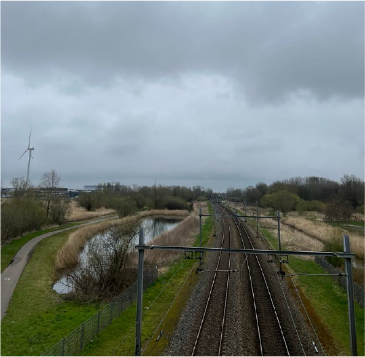
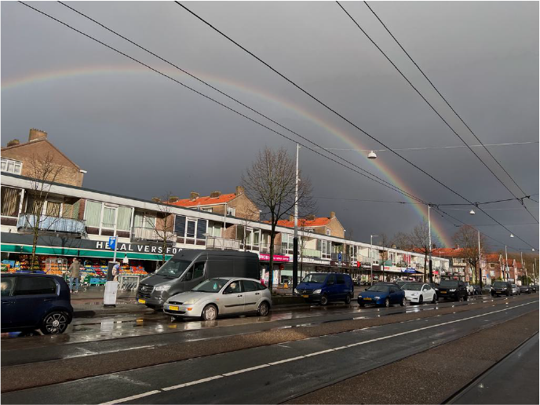

Volkstuinpark
Volkstuinpark de Bretten is een gemeenschapstuin in Amsterdam en is opgericht op 16 augustus 1976. Er staan in totaal 203 tuinhuisjes. Veel tuinders blijven daar wonen tussen april en oktober, omdat de huisjes beschikken over stromend water en elektriciteit.
Het volkstuinpark ligt dichtbij station Sloterdijk voor mensen die niet van fietsen houden. Het is een volkstuinpark met een eigen uniek karakter en levert grote bijdrage aan het welzijn van de tuinders.
Plein 40-45
Naast dat het volkstuinpark in de Bretten ligt en omringd is door groen, is de stad, industrieterrein en het spoorweg niet ver te vinden. Zo gaat er een treinspoor dwars door het wandelgebied heen en is er een winkel centrum op loopafstand genaamd: Plein 40-45 in Slotermeer. Bij het winkelcentrum is er ook een markt te vinden die het gehele jaar open is van dinsdag tot zaterdag tussen 09:00 en 17:00.
